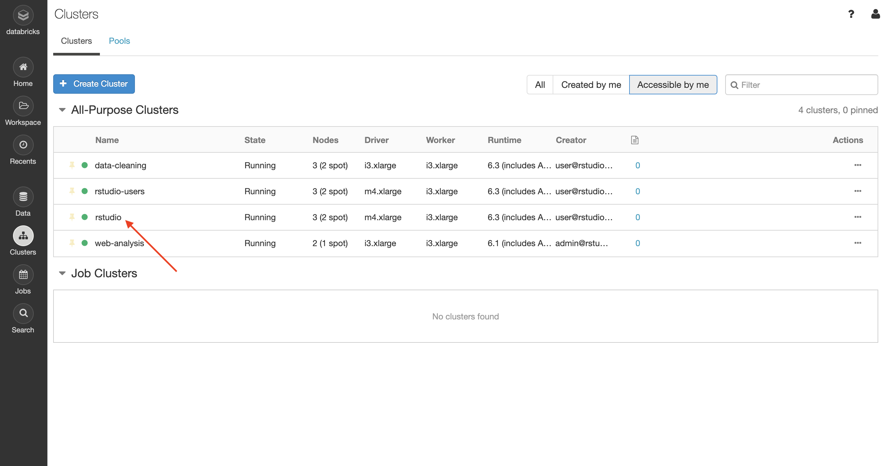
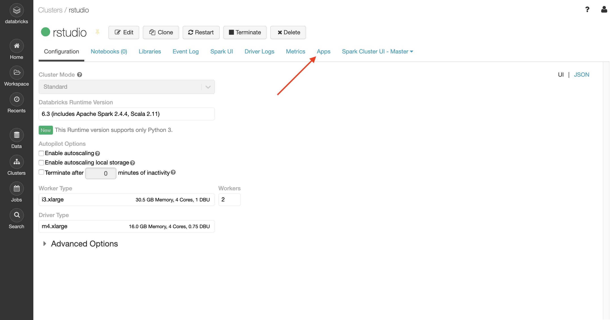
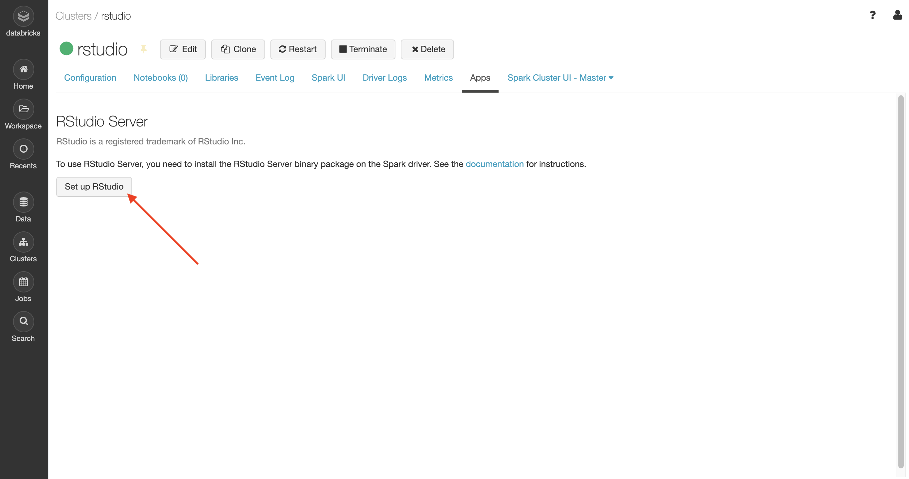
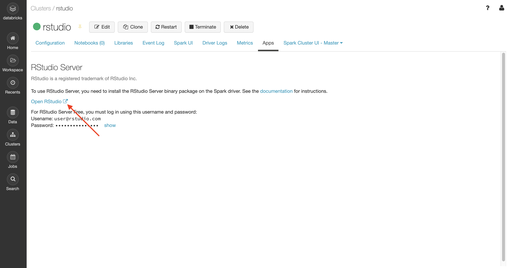
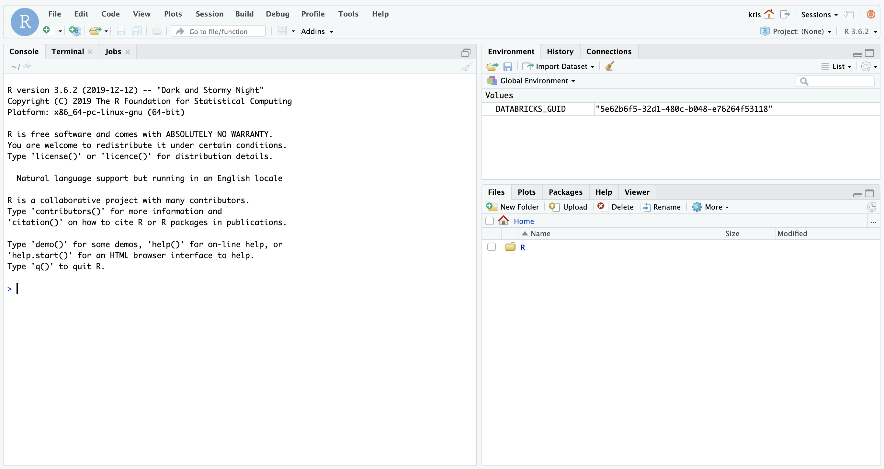

Option 2 - Working inside of Databricks
Overview
If the recommended path of connecting to Spark remotely with Databricks Connect does not apply to your use case, then you can install RStudio Workbench directly within a Databricks cluster as described in the sections below.
With this configuration, RStudio Workbench is installed on the Spark driver node and allows users to work locally with Spark using sparklyr.

This configuration can result in increased complexity, limited connectivity to other storage and compute resources, resource contention between RStudio Workbench and Databricks, and maintenance concerns due to the ephemeral nature of Databricks clusters.
For additional details, refer to the FAQ for RStudio in the Databricks Documentation.
Advantages and limitations
Advantages:
- Ability for users to connect
sparklyrto Spark without configuring remote connectivity - Provides a high-bandwidth connection between R and the Spark JVM processes because they are running on the same machine
- Can load data from the cluster directly into an R session since RStudio Workbench is installed within the Databricks cluster
Limitations:
- If the Databricks cluster is restarted or terminated, then the instance of RStudio Workbench will be terminated and its configuration will be lost
- If users do not persist their code through version control or the Databricks File System, then you risk losing user’s work if the cluster is restarted or terminated
- RStudio Workbench (and other RStudio products) installed within a Databricks cluster will be limited to the compute resources and lifecycle of that particular Spark cluster
- Non-Spark jobs will use CPU and RAM resources within the Databricks cluster
- Need to install one instance of RStudio Workbench per Spark cluster that you want to run jobs on
Requirements
- A running Databricks cluster with a runtime version 4.1 or above
- The cluster must not have “table access control” or “automatic termination” enabled
- You must have “Can Attach To” permission for the Databricks cluster
Preparation
The following steps walk through the process to install RStudio Workbench on the Spark driver node within your Databricks cluster.
The recommended method for installing RStudio Workbench to the Spark driver node is via SSH. However, an alternative method is available if you are not able to access the Spark driver node via SSH.
Configure SSH access to the Spark driver node
Configure SSH access to the Spark driver node in Databricks by following the steps in the SSH access to clusters section of the Databricks Cluster configurations documentation.
Note: If you are unable to configure SSH access or connect to the Spark driver node via SSH, then you can follow the steps in the Get started with RStudio Workbench section of the RStudio on Databricks documentation to install RStudio Workbench from a Databricks notebook, then skip to the access RStudio Workbench section of this documentation.
Connect to the Spark driver node via SSH
Connect to the Spark driver node via SSH on port 2200 by using the following command on your local machine:
ssh ubuntu@<spark-driver-node-address> -p 2200 -i <path-to-private-SSH-key>Replace <spark-driver-node-address> with the DNS name or IP address of the Spark driver node, and <path-to-private-SSH-key> with the path to your private SSH key on your local machine.
Install RStudio Workbench on the Spark driver node
After you SSH into the Spark driver node, then you can follow the typical steps to install RStudio Workbench in the RStudio documentation. In the installation steps, you can select Ubuntu as the target Linux distribution.
Configure RStudio Workbench
The following configuration steps are required to be able to use RStudio Workbench with Databricks.
Add the following configuration lines to /etc/rstudio/rserver.conf to use proxied authentication with Databricks and enable the administrator dashboard:
auth-proxy=1
auth-proxy-user-header-rewrite=^(.*)$ $1
auth-proxy-sign-in-url=<domain>/login.html
admin-enabled=1Add the following configuration line to /etc/rstudio/rsession-profile to set the PATH to be used with RStudio Workbench:
export PATH=/usr/local/sbin:/usr/local/bin:/usr/sbin:/usr/bin:/sbin:/bin:$PATHAdd the following configuration lines to /etc/rstudio/rsession.conf to configure sessions in RStudio Workbench to work with Databricks:
session-rprofile-on-resume-default=1
allow-terminal-websockets=0Restart RStudio Workbench:
sudo rstudio-server restartAccess RStudio Workbench
From the Databricks console, click on the Databricks cluster that you want to work with:

From within the Databricks cluster, click on the Apps tab:

Click on the Set up RStudio button:

To access RStudio Workbench, click on the link to Open RStudio:

If you configured proxied authentication in RStudio Workbench as described in the previous section, then you do not need to use the username or password that is displayed. Instead, RStudio Workbench will automatically login and start a new RStudio session as your logged-in Databricks user:

Other users can access RStudio Workbench from the Databricks console by following the same steps described above. You do not need to create those users in RStudio Workbench or their home directory beforehand.
Configure sparklyr
Use the following R code to establish a connection from sparklyr to the Databricks cluster:
SparkR::sparkR.session()
library(sparklyr)
sc <- spark_connect(method = "databricks")Additional information
For more information on using RStudio Workbench inside of Databricks, refer to the sections on RStudio on Databricks (AWS) or RStudio on Databricks (Azure) in the Databricks documentation.